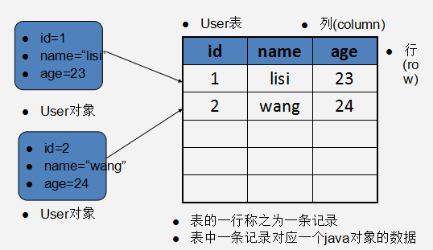
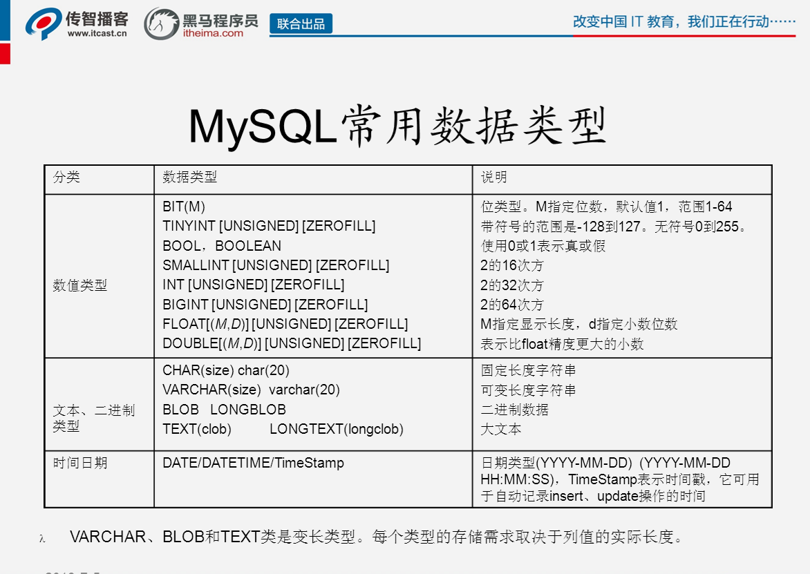
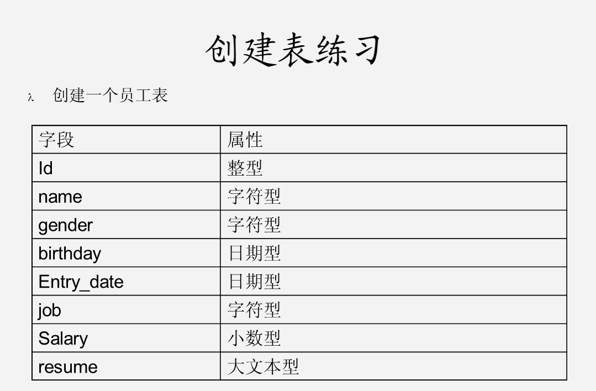
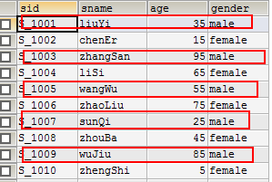
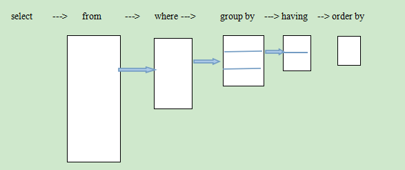

一、数据库概述¶
-
数据库（DataBase，DB）：指长期保存在计算机的存储设备上，按照一定规则组织起来，可以被各种用户或应用共享的数据集合。(文件系统)
-
数据库管理系统（DataBase Management System，DBMS）：指一种操作和管理数据库的大型软件，用于建立、使用和维护数据库，对数据库进行统一管理和控制，以保证数据库的安全性和完整性。用户通过数据库管理系统访问数据库中的数据。
-
数据库软件应该为**数据库管理系统**，数据库是通过数据库管理系统创建和操作的。
-
数据库：存储、维护和管理数据的集合。
二、数据库的安装与配置¶
- 安装
* 参照图解
* 一路下一步
- 配置
* 参照图解
* 到选择字符集时停
-
登录Mysql：
mysql -u root -p abc
-
卸载
1.停止mysql服务 net stop mysql 启动mysql服务 net start mysql
2.卸载mysql
3.找到mysql 安装目录下的 my.ini datadir="C:/ProgramData/MySQL/MySQL Server 5.5/Data/"
- 修改密码
运行cmd
* 安装成功了打开cmd → mysql -uroot -p你的密码
* 修改mysql root用户密码
1) 停止mysql服务 运行输入services.msc 停止mysql服务
或者 cmd → net stop mysql
2) 在cmd下 输入 mysqld --skip-grant-tables 启动服务器 光标不动 （不要关闭该窗口）
3) 新打开cmd 输入mysql -u root -p 不需要密码
use mysql;
update user set password=password('abc') WHERE User='root';
4) 关闭两个cmd窗口 在任务管理器结束mysqld 进程
5) 在服务管理页面 重启mysql 服务
密码修改完成
- 数据库中一行记录与对象之间的关系。

-
列：字段
-
行：一条记录(实体)
```java public class User{
private int id;
private String name;
private int age;
} ```
三、sql概述¶
-
SQL：Structure Query Language。（结构化查询语言）
-
SQL被美国国家标准局（ANSI）确定为关系型数据库语言的美国标准，后来被国际化标准组织（ISO）采纳为关系数据库语言的国际标准。
-
各数据库厂商都支持ISO的SQL标准。普通话
-
各数据库厂商在标准的基础上做了自己的扩展。方言
四、Sql的分类¶
-
DDL**（Data Definition Language）：数据定义语言，用来定义数据库对象：库、表、列等； CREATE、 ALTER、DROP
-
DML***（Data Manipulation Language）：数据操作语言，用来定义数据库记录（数据）； INSERT、 UPDATE、 DELETE
-
DCL（Data Control Language）：数据控制语言，用来定义访问权限和安全级别；
-
DQL*****（Data Query Language）：数据查询语言，用来查询记录（数据）。 SELECT
注意：sql语句以**;**结尾
4.1 DDL:操作数据库、表、列等¶
- 使用的关键字：CREATE**、 ALTER****、 DROP**
4.1.1操作数据库¶
创建
- create database mydb1;
- Create database mydb2 character set gbk;
- Create database mydb2 charset gbk #跟上面的是一样的,是简写
- Create database mydb3 character set gbk COLLATE gbk_chinese_ci;
- create database mydb3 charset gbk collate gbk chinese_ci
查询
-
查看当前数据库服务器中的所有数据库
show databases;
-
查看前面创建的mydb2数据库的定义信息
Show create database mydb2;
-
删除前面创建的mydb3数据库
Drop database mydb3;
修改
-
查看服务器中的数据库，并把mydb2的字符集修改为utf8;
alter database mydb2 character set utf8;
删除
- drop database mydb3;
其他：
-
查看当前使用的数据库
select database();
-
切换数据库
use mydb2;
4.1.2操作数据表¶
- 语法：
create table 表名(
字段1 字段类型,
字段2 字段类型,
...
字段n 字段类型
);
- 常用数据类型：
int：整型
double：浮点型，例如double(5,2)表示最多5位，其中必须有2位小数，即最大值为999.99；
char：固定长度字符串类型； char(10) 'abc '
varchar：可变长度字符串类型；varchar(10) 'abc'
text：字符串类型;
blob：字节类型；
date：日期类型，格式为：yyyy-MM-dd；
time：时间类型，格式为：hh ss
ss
timestamp：时间戳类型 yyyy-MM-dd hhss 会自动赋值
datetime:日期时间类型 yyyy-MM-dd hhss

实例

代码:
1 2 3 4 5 6 7 8 9 10 | create table emp( id int, name varchar(50), gender varchar(10), birthday date, entry_date date, job varchar(100), salary double, resume varchar(200) ); #千万不要忘了加表名 |
-
当前数据库中的所有表
SHOW TABLES;
```sql +-----------------+ | Tables_in_mydb1 | +-----------------+ | emp | +-----------------+ 1 row in set (0.00 sec)
```
-
查看表的字段信息
DESC emp;
```sql +------------+--------------+------+-----+---------+-------+ | Field | Type | Null | Key | Default | Extra | +------------+--------------+------+-----+---------+-------+ | id | int(11) | YES | | NULL | | | name | varchar(50) | YES | | NULL | | | gender | varchar(10) | YES | | NULL | | | birthday | date | YES | | NULL | | | entry_date | date | YES | | NULL | | | job | varchar(100) | YES | | NULL | | | salary | double | YES | | NULL | | | resume | varchar(200) | YES | | NULL | | +------------+--------------+------+-----+---------+-------+ 8 rows in set (0.00 sec)
```
-
在上面员工表的基本上增加一个image列。
ALTER TABLE emp ADD image blob;
```sql mysql> alter table emp add image blob; Query OK, 0 rows affected (0.04 sec) Records: 0 Duplicates: 0 Warnings: 0
```
-
修改job列，使其长度为60。
ALTER TABLE emp MODIFY job varchar(60);
sql mysql> alter table emp modify job varchar(60); Query OK, 0 rows affected (0.04 sec) Records: 0 Duplicates: 0 Warnings: 0 -
删除image列,一次只能删一列。
ALTER TABLE emp DROP image;
sql mysql> alter table emp drop image; Query OK, 0 rows affected (0.03 sec) Records: 0 Duplicates: 0 Warnings: 0 -
表名改为user。
RENAME TABLE emp TO user;
sql mysql> rename table emp to user; Query OK, 0 rows affected (0.01 sec) -
查看表格的创建细节
SHOW CREATE TABLE user;
``sql mysql> show create table user; +-------+------------------------------------------------------------------------------------------------------------------------------------------------------------------------------------------------------------------------------------------------------------------------------------------------------------------------------------------+ | Table | Create Table | +-------+------------------------------------------------------------------------------------------------------------------------------------------------------------------------------------------------------------------------------------------------------------------------------------------------------------------------------------------+ | user | CREATE TABLEuser(idint(11) DEFAULT NULL,namevarchar(50) DEFAULT NULL,gendervarchar(10) DEFAULT NULL,birthdaydate DEFAULT NULL,entry_datedate DEFAULT NULL,jobvarchar(60) DEFAULT NULL,salarydouble DEFAULT NULL,resume` varchar(200) DEFAULT NULL ) ENGINE=InnoDB DEFAULT CHARSET=utf8 | +-------+------------------------------------------------------------------------------------------------------------------------------------------------------------------------------------------------------------------------------------------------------------------------------------------------------------------------------------------+ 1 row in set (0.00 sec)```
-
修改表的字符集为gbk
ALTER TABLE user CHARACTER SET gbk;
sql mysql> alter table user charset gbk; Query OK, 0 rows affected (0.00 sec) Records: 0 Duplicates: 0 Warnings: 0 -
列名name修改为username
ALTER TABLE user CHANGE name username varchar(100);
sql mysql> alter table user change name username varchar(100); Query OK, 0 rows affected (0.02 sec) Records: 0 Duplicates: 0 Warnings: 0 -
删除表
DROP TABLE user ;
sql mysql> drop table user; Query OK, 0 rows affected (0.01 sec)
4.2 DML操作(重要)¶
-
查询表中的所有数据
SELECT * FROM 表名;
-
DML是对表中的数据进行增、删、改的操作。不要与DDL混淆了。
INSERT 、UPDATE、 DELETE
小知识：在mysql中，字符串类型和日期类型都要用单引号括起来。'tom' '2015-09-04'
空值：null
4.2.1插入操作：INSERT:¶
-
语法： INSERT INTO 表名（列名1，列名2 ...）VALUES(列值1，列值2...);
-
注意：列名与列值的类型、个数、顺序要一一对应。
可以把列名当做java中的形参，把列值当做实参。
值不要超出列定义的长度。
如果插入空值，请使用null
插入的日期和字符一样，都使用引号括起来。
练习 ：
1 2 3 4 5 6 7 8 9 10 11 12 13 14 15 16 17 | create table emp( id int, name varchar(100), gender varchar(10), birthday date, salary float(10,2), entry_date date, resume text ); |
插入操作
1 2 3 4 5 6 7 8 9 10 11 12 | INSERT INTO emp(id,name,gender,birthday,salary,entry_date,resume) VALUES(1,'zhangsan','female','1990-5-10',10000,'2015-5-5-','good girl'); INSERT INTO emp(id,name,gender,birthday,salary,entry_date,resume) VALUES(2,'lisi','male','1995-5-10',10000,'2015-5-5','good boy'); INSERT INTO emp(id,name,gender,birthday,salary,entry_date,resume) VALUES(3,'wangwu','male','1995-5-10',10000,'2015-5-5','good boy'); |
批量插入：
1 2 3 4 5 6 7 | INSERT INTO emp VALUES (4,'zs','m','2015-09-01',10000,'2015-09-01',NULL), (5,'li','m','2015-09-01',10000,'2015-09-01',NULL), (6,'ww','m','2015-09-01',10000,'2015-09-01',NULL); |
4.2.2 修改操作 UPDATE:¶
-
语法：UPDATE 表名 SET 列名1=列值1，列名2=列值2 。。。 WHERE 列名=值
-
练习：
-
将所有员工薪水修改为5000元。
UPDATE emp SET salary=5000
-
将姓名为’zs’的员工薪水修改为3000元。
UPDATE emp SET salary=3000 WHERE name=’ zhangsan’;
-
将姓名为’lisi’的员工薪水修改为4000元,gender改为f。
UPDATE emp SET salary=4000,gender='f' WHERE NAME='lisi' ;
-
将wu的薪水在原有基础上增加1000元。 UPDATE emp SET salary=salary+1000 WHERE NAME='ww';
-
4.2.3 删除操作 DELETE:¶
-
语法 ： DELETE FROM 表名 【WHERE 列名=值】
-
练习 ：
-
删除表中名称为’zhangsan’的记录。
DELETE FROM emp WHERE name=‘zs’;
-
删除表中所有记录。
DELETE FROM emp;
-
使用truncate删除表中记录。
TRUNCATE TABLE emp;
-
DELETE 删除表中的数据，表结构还在;删除后的数据可以找回
TRUNCATE 删除是把表直接DROP掉，然后再创建一个同样的新表。
删除的数据不能找回。执行速度比DELETE快。
DML 操作的sql语句
1 2 3 4 5 6 7 8 9 10 11 12 13 14 15 16 17 18 19 20 21 22 23 24 25 26 27 28 29 30 31 32 33 34 35 36 37 38 39 40 41 42 43 44 45 46 47 48 49 50 51 52 53 54 55 56 57 58 59 60 61 | -- 创建一个新的数据库，这个软件会自动大写,注意后面的分号可以不写但是不要这么去做 CREATE DATABASE mydb1 ; -- 使用这个数据库 USE mydb1 ; -- 在这个数据库中创建一个新的表emp CREATE TABLE emp( id INT, NAME VARCHAR(100), gender VARCHAR(10), birthday DATE, salary FLOAT(10,2), entry_date DATE, RESUME TEXT ); -- 查询表中的所有数据 SELECT * FROM emp; -- 向emp表中添加数据(一行行的插入)(需要注意的是在sql里大小写不敏感) INSERT INTO emp(id,NAME,gender,birthday,salary,entry_date,RESUME) VALUES(1,'tom','m','2015-09-24','10000','2015-09-25','good boy'); INSERT INTO emp(id,NAME,gender,birthday,salary,entry_date,RESUME) VALUES(1,'zhangsan','female','1990-5-10',10000,'2015-5-5-','good girl'); INSERT INTO emp(id,NAME,gender,birthday,salary,entry_date,RESUME) VALUES(2,'lisi','male','1995-5-10',10000,'2015-5-5','good boy'); INSERT INTO emp(id,NAME,gender,birthday,salary,entry_date,RESUME) VALUES(3,'王','male','1995-5-10',10000,'2015-5-5','good boy'); -- 向emp表中插入数据(多行的插入) INSERT INTO emp VALUES (4,'zs','m','2015-09-01',10000,'2015-09-01',NULL), (5,'li','m','2015-09-01',10000,'2015-09-01',NULL), (6,'ww','m','2015-09-01',10000,'2015-09-01',NULL); -- 查询表中的所有数据 SELECT * FROM emp; -- 将所有员工薪水修改为5000元 UPDATE emp SET salary=5000; -- 将姓名为’zs’的员工薪水修改为3000元。注意这里的等于是一个等于号 UPDATE emp SET salary=300 WHERE NAME ='zs'; -- 将姓名为’lisi’的员工薪水修改为4000元,性别改为f。 UPDATE emp SET salary=4000,gender='f' WHERE NAME='lisi'; -- 将ww的薪水在原有基础上增加1000元. UPDATE emp SET salary=salary+1000 WHERE NAME='ww'; -- 删除表中名称为’zhangsan’的记录。 DELETE FROM emp WHERE NAME = 'zhangsan' -- 删除表中的所有的元素 DELETE FROM emp; -- 使用truncate删除表中记录,首先删除表然后创建一个新的表 TRUNCATE TABLE emp; |
4.3 DQL操作¶
-
DQL数据查询语言 （重要）
-
数据库执行DQL语句不会对数据进行改变，而是让数据库发送结果集给客户端。
-
查询返回的结果集是一张虚拟表。
-
查询关键字：SELECT
-
语法： SELECT 列名 FROM表名
【WHERE → GROUP BY →HAVING→ ORDER BY】
-
语法：
-
SELECT selection_list /要查询的列名称/
FROM table_list /要查询的表名称/
WHERE condition /行条件/
GROUP BY grouping_columns /对结果分组/
HAVING condition /分组后的行条件/
ORDER BY sorting_columns /对结果分组/
LIMIT offset_start, row_count /结果限定/ # mysql独有的
-
-
创建名：
学生表：stu
| 字段名称 | 字段类型 | 说明 |
|---|---|---|
| sid | char(6) | 学生学号 |
| sname | varchar(50) | 学生姓名 |
| age | int | 学生年龄 |
| gender | varchar(50) | 学生性别 |
1 2 3 4 5 6 7 8 9 10 11 12 13 14 15 16 17 18 19 | -- 创建一个新的表stu CREATE TABLE stu ( sid CHAR(6), sname VARCHAR(50), age INT, gender VARCHAR(50) ); INSERT INTO stu VALUES('S_1001', 'liuYi', 35, 'male'); INSERT INTO stu VALUES('S_1002', 'chenEr', 15, 'female'); INSERT INTO stu VALUES('S_1003', 'zhangSan', 95, 'male'); INSERT INTO stu VALUES('S_1004', 'liSi', 65, 'female'); INSERT INTO stu VALUES('S_1005', 'wangWu', 55, 'male'); INSERT INTO stu VALUES('S_1006', 'zhaoLiu', 75, 'female'); INSERT INTO stu VALUES('S_1007', 'sunQi', 25, 'male'); INSERT INTO stu VALUES('S_1008', 'zhouBa', 45, 'female'); INSERT INTO stu VALUES('S_1009', 'wuJiu', 85, 'male'); INSERT INTO stu VALUES('S_1010', 'zhengShi', 5, 'female'); INSERT INTO stu VALUES('S_1011', 'xxx', NULL, NULL); |
雇员表：emp
| 字段名称 | 字段类型 | 说明 |
|---|---|---|
| empno | int | 员工编号 |
| ename | varchar(50) | 员工姓名 |
| job | varchar(50) | 员工工作 |
| mgr | int | 领导编号 |
| hiredate | date | 入职日期 |
| sal | decimal(7,2) | 月薪 |
| comm | decimal(7,2) | 奖金 |
| deptno | int | 部分编号 |
1 2 3 4 5 6 7 8 9 10 11 12 13 14 15 16 17 18 19 20 21 22 23 24 25 | CREATE TABLE emp( empno INT, ename VARCHAR(50), job VARCHAR(50), mgr INT, hiredate DATE, sal DECIMAL(7,2), comm DECIMAL(7,2), deptno INT ) ; INSERT INTO emp VALUES(7369,'SMITH','CLERK',7902,'1980-12-17',800,NULL,20); INSERT INTO emp VALUES(7499,'ALLEN','SALESMAN',7698,'1981-02-20',1600,300,30); INSERT INTO emp VALUES(7521,'WARD','SALESMAN',7698,'1981-02-22',1250,500,30); INSERT INTO emp VALUES(7566,'JONES','MANAGER',7839,'1981-04-02',2975,NULL,20); INSERT INTO emp VALUES(7654,'MARTIN','SALESMAN',7698,'1981-09-28',1250,1400,30); INSERT INTO emp VALUES(7698,'BLAKE','MANAGER',7839,'1981-05-01',2850,NULL,30); INSERT INTO emp VALUES(7782,'CLARK','MANAGER',7839,'1981-06-09',2450,NULL,10); INSERT INTO emp VALUES(7788,'SCOTT','ANALYST',7566,'1987-04-19',3000,NULL,20); INSERT INTO emp VALUES(7839,'KING','PRESIDENT',NULL,'1981-11-17',5000,NULL,10); INSERT INTO emp VALUES(7844,'TURNER','SALESMAN',7698,'1981-09-08',1500,0,30); INSERT INTO emp VALUES(7876,'ADAMS','CLERK',7788,'1987-05-23',1100,NULL,20); INSERT INTO emp VALUES(7900,'JAMES','CLERK',7698,'1981-12-03',950,NULL,30); INSERT INTO emp VALUES(7902,'FORD','ANALYST',7566,'1981-12-03',3000,NULL,20); INSERT INTO emp VALUES(7934,'MILLER','CLERK',7782,'1982-01-23',1300,NULL,10); |
部分表：dept
| 字段名称 | 字段类型 | 说明 |
|---|---|---|
| deptno | int | 部分编码 |
| dname | varchar(50) | 部分名称 |
| loc | varchar(50) | 部分所在地点 |
1 2 3 4 5 6 7 8 9 10 11 12 | CREATE TABLE dept( deptno INT, dname VARCHAR(14), loc VARCHAR(13) ); INSERT INTO dept VALUES(10, 'ACCOUNTING', 'NEW YORK'); INSERT INTO dept VALUES(20, 'RESEARCH', 'DALLAS'); INSERT INTO dept VALUES(30, 'SALES', 'CHICAGO'); INSERT INTO dept VALUES(40, 'OPERATIONS', 'BOSTON'); SELECT * FROM dept; SELECT * FROM emp; SELECT * FROM stu; |
1 基础查询¶
1.1 查询所有列
SELECT * FROM stu;
1.2 查询指定列
SELECT sid, sname, age FROM stu;
2 条件查询¶
2.1 条件查询介绍
条件查询就是在查询时给出WHERE子句，在WHERE子句中可以使用如下运算符及关键字：
-
=、!=、<>、<、<=、>、>=；
-
BETWEEN…AND； 跟大于等于 小于等于的范围是一样的 <= >=
-
IN(set)；// set是一个结合,将查询的条件放到这个set中,固定的范围之内
-
IS NULL； IS NOT NULL
-
AND；
-
OR；
-
NOT；
1 2 3 4 5 6 7 8 9 10 11 12 13 14 15 16 17 18 19 20 21 22 23 24 25 26 27 28 29 30 31 32 33 34 35 36 37 38 39 40 41 42 43 44 45 46 | -- 查询整个表 SELECT * FROM dept; SELECT * FROM emp; SELECT * FROM stu; -- DQL练习 -- 1.2 查询指定列 ,列名以逗号隔开 SELECT sid,sname,age FROM stu; -- 2.2 查询性别为女，并且年龄大于等于50的记录 SELECT * FROM stu WHERE gender='female' AND age>=50; -- 2.3 查询学号为S_1001，或者姓名为liSi的记录 SELECT * FROM stu WHERE sid='S_1001' OR sname='lisi'; -- 2.4 查询学号为S_1001，S_1002，S_1003的记录 SELECT * FROM stu WHERE sid='S_1001' OR sid='S_1002' OR sid='S_1003'; SELECT * FROM stu WHERE sid IN('S_1001','S_1002','S_1003'); -- 2.5 查询学号不是S_1001，S_1002，S_1003的记录 SELECT * FROM stu WHERE sid NOT IN('S_1001','S_1002','S_1003'); -- 2.6 查询年龄为null的记录 SELECT * FROM stu WHERE age IS NULL; SELECT * FROM stu WHERE age IS NOT NULL; -- 2.7 查询年龄在20到40之间的学生记录 SELECT * FROM stu WHERE age>=20 AND age<=40; SELECT * FROM stu WHERE age BETWEEN 20 AND 40; #上面的范围是一样的 -- 2.8 查询性别非男的学生记录 SELECT * FROM stu WHERE gender='female'; SELECT * FROM stu WHERE gender!='male'; SELECT * FROM stu WHERE gender<>'male'; #也是不等于 -- 2.9 查询姓名不为null的学生记录 SELECT * FROM stu WHERE sname IS NOT NULL; |
3 模糊查询¶
当想查询姓名中包含a字母的学生时就需要使用模糊查询了。模糊查询需要使用关键字LIKE。
通配符:
_ 任意一个字符
%：任意0~n个字符
'%张%' '张_'
模糊查询
1 2 3 4 5 6 7 8 9 10 11 12 13 14 15 16 17 | -- 模糊查询 -- 模糊查询必须使用LIKE关键字。其中 “_”匹配任意一个字母，5个_表示5个任意字母。 -- 3.1 查询姓名由5个字母构成的学生记录 SELECT * FROM stu WHERE sname LIKE '_____'; -- 3.2 查询姓名由5个字母构成，并且第5个字母为“i”的学生记录 SELECT * FROM stu WHERE sname LIKE '____i'; -- 3.3 查询姓名以“z”开头的学生记录 SELECT * FROM stu WHERE sname LIKE 'z%'; -- 3.4 查询姓名中第2个字母为“i”的学生记录 SELECT * FROM stu WHERE sname LIKE '_i%'; -- 3.5 查询姓名中包含“a”字母的学生记录 SELECT * FROM stu WHERE sname LIKE '%a%'; |
4 字段控制查询¶
1 2 3 4 5 6 7 8 9 10 11 12 13 14 15 16 17 18 19 20 21 22 23 24 25 26 | -- 4字段控制查询 -- 4.1 去除重复记录 -- 去除重复记录（两行或两行以上记录中系列的上的数据都相同）， -- 例如emp表中sal字段就存在相同的记录。当只查询emp表的sal字段时， -- 那么会出现重复记录，那么想去除重复记录，需要使用DISTINCT： SELECT DISTINCT deptno FROM emp; -- 4.2 查看雇员的月薪与佣金之和 -- 因为sal和comm两列的类型都是数值类型， -- 所以可以做加运算。 -- 如果sal或comm中有一个字段不是数值类型，那么会出错。 SELECT * FROM emp; -- comm列有很多记录的值为NULL， -- 因为任何东西与NULL相加结果还是NULL， -- 所以结算结果可能会出现NULL。下面使用了把NULL转换成数值0的函数IFNULL： SELECT sal+IFNULL(comm,0) FROM emp; SELECT IFNULL(comm,0) FROM emp; #如果comm中的是不是null那么就按照原样进行输出,否则就输出零 -- 给列起别名 -- 在上面查询中出现列名为sal+IFNULL(comm,0)， -- 这很不美观，现在我们给这一列给出一个别名，为total： SELECT *,sal+IFNULL(comm,0) AS total FROM emp; #(生成一个新的列在虚拟表的最后面) SELECT sname AS 姓名, gender 性别 FROM stu; |
5 排序 order by 列名 asc(默认) desc¶
1 2 3 4 5 6 7 8 9 10 | -- 5 排序 order by 列名 asc(默认) desc -- 5.1 查询所有学生记录，按年龄升序排序 SELECT * FROM stu ORDER BY age ASC; SELECT * FROM stu ORDER BY age; #默认是升序 -- 5.2 查询所有学生记录，按年龄降序排序 SELECT * FROM stu ORDER BY age DESC; -- 5.3 查询所有雇员，按月薪降序排序，如果月薪相同时，按编号升序排序 SELECT * FROM emp ORDER BY sal ,empno DESC; #这个desc是用来限制empno的 empno DESC 每一个逗号是一个分割 |
6 聚合函数 sum avg max min count¶
聚合函数是用来做纵向运算的函数：
-
COUNT()：统计指定列不为NULL的记录行数；
-
MAX()：计算指定列的最大值，如果指定列是字符串类型，那么使用字符串排序运算；
-
MIN()：计算指定列的最小值，如果指定列是字符串类型，那么使用字符串排序运算；
-
SUM()：计算指定列的数值和，如果指定列类型不是数值类型，那么计算结果为0；
-
AVG()：计算指定列的平均值，如果指定列类型不是数值类型，那么计算结果为0；
1 2 3 4 5 6 7 8 9 10 11 12 13 14 15 16 17 18 19 20 21 22 23 24 25 26 27 28 29 30 31 32 33 34 35 36 37 38 39 40 41 42 43 | -- 6 聚合函数 sum avg max min count -- 6.1 COUNT -- 当需要纵向统计时可以使用COUNT()。 -- 查询emp表中记录数： SELECT COUNT(*) FROM stu; -- 查询emp表中有佣金的人数： SELECT COUNT(comm) FROM emp; -- 查询emp表中月薪大于2500的人数： SELECT COUNT(*) FROM emp WHERE sal>2500; -- 统计月薪与佣金之和大于2500元的人数： SELECT COUNT(*) FROM emp WHERE (sal+IFNULL(comm,0))>2500; -- 查询有佣金的人数，有领导的人数： SELECT COUNT(comm),COUNT(mgr) FROM emp; -- 查询有佣金的人数，以及有领导的人数： SELECT COUNT(*) FROM emp WHERE comm IS NOT NULL AND mgr IS NOT NULL; -- 6.2 SUM和AVG -- 当需要纵向求和时使用sum()函数。 -- 查询所有雇员月薪和： SELECT SUM(sal) FROM emp; -- 查询所有雇员月薪和，以及所有雇员佣金和： SELECT SUM(sal),SUM(comm) FROM emp; -- 查询所有雇员月薪+佣金和： SELECT SUM(sal+IFNULL(comm,0)) FROM emp; SELECT SUM(sal)+SUM(comm) FROM emp; -- 统计所有员工平均工资： SELECT AVG(sal) FROM emp; -- 6.3 MAX和MIN -- 查询最高工资和最低工资： SELECT MAX(sal),MIN(sal) FROM emp; |
7 分组查询¶
当需要分组查询时需要使用GROUP BY子句，例如查询每个部门的工资和，这说明要使用部门来分组。
注：凡和聚合函数同时出现的列名，一定要写在group by 之后,聚合前面是一个deptno后面的分组也要是deptno
1 | SELECT deptno,COUNT(*) FROM emp GROUP BY deptno; #根据部门进行分组,总共有三部门所以分了三组 |

1 2 3 4 5 6 7 8 9 10 11 12 13 14 15 16 17 18 19 20 21 22 23 24 25 26 27 28 29 30 31 32 33 34 35 36 37 38 | -- 7 分组查询 -- 当需要分组查询时需要使用GROUP BY子句，例如查询每个部门的工资和，这说明要使用部门来分组。 -- 注：凡和聚合函数同时出现的列名，一定要写在group by 之后 SELECT COUNT(*) FROM stu WHERE gender='male' OR gender='female'; SELECT COUNT(*) FROM stu WHERE gender IS NOT NULL GROUP BY gender; #对性别分了两组 SELECT COUNT(*) FROM stu WHERE gender IS NOT NULL GROUP BY gender; -- 7.1 分组查询 -- 查询各部门的人数 SELECT * FROM emp; SELECT deptno FROM emp GROUP BY deptno; SELECT deptno,COUNT(*) FROM emp GROUP BY deptno; #根据部门进行分组,总共有三部门所以分了三组 -- 查询每个部门的部门编号和每个部门的工资和： SELECT deptno,SUM(sal) FROM emp GROUP BY deptno; -- 查询每个部门的部门编号以及每个部门的人数： SELECT deptno,COUNT(*) FROM emp GROUP BY deptno; -- 查询每个部门的部门编号以及每个部门工资大于1500的人数 SELECT * FROM emp WHERE sal>1500; SELECT deptno,COUNT(*) FROM emp WHERE sal>1500 GROUP BY deptno; -- 7.2 HAVING子句分组后继续筛选(行条件) -- 查询工资总和大于9000的部门编号以及工资和： SELECT deptno,SUM(sal) FROM emp GROUP BY deptno HAVING SUM(sal)>9000; SELECT deptno,SUM(sal) FROM emp GROUP BY deptno HAVING SUM(sal)>9000 ORDER BY SUM(sal); -- 查询工资大于1500的,工资总和大于6000的部门编号以及工资和： SELECT deptno,SUM(sal) FROM emp WHERE sal>1500 GROUP BY deptno HAVING SUM(sal)>6000 ORDER BY SUM(sal); |
注：having与where的区别:
1.having是在分组后对数据进行过滤.
where是在分组前对数据进行过滤
2.having后面可以使用聚合函数(统计函数)
where后面不可以使用聚合函数。
WHERE是对分组前记录的条件，如果某行记录没有满足WHERE子句的条件，那么这行记录不会参加分组；而HAVING是对分组后数据的约束。

8 LIMIT 方言¶
LIMIT用来限定查询结果的起始行，以及总行数。
8.1 查询5行记录，起始行从0开始
SELECT * FROM emp LIMIT 0, 5;
注意，起始行从0开始，即第一行开始！
8.2 查询10行记录，起始行从3开始
1 | SELECT * FROM emp LIMIT 3, 10; |
8.3 分页查询
如果一页记录为10条，希望查看第3页记录应该怎么查呢？
-
第一页记录起始行为0，一共查询10行；
-
第二页记录起始行为10，一共查询10行；
-
第三页记录起始行为20，一共查询10行；
8.3 查询代码的书写顺序和执行顺序
1 2 3 | 查询语句书写顺序：select – from- where- group by- having- order by-limit 查询语句执行顺序：from - where -group by - having - select - order by-limit |
-- 8 LIMIT 方言 -- LIMIT用来限定查询结果的起始行，以及总行数。
1 2 3 4 5 | SELECT * FROM emp; INT currentPage = 3;-- 当前页 INT pageSize = 3; -- 每页显示的条数 SELECT * FROM emp LIMIT （currentPage-1）*pageSize,pageSize; SELECT * FROM emp LIMIT 0,3; -- 第一个参数：从第几行查询，第二个参数：查几行 |
完整的上半部分
1 2 3 4 5 6 7 8 9 10 11 12 13 14 15 16 17 18 19 20 21 22 23 24 25 26 27 28 29 30 31 32 33 34 35 36 37 38 39 40 41 42 43 44 45 46 47 48 49 50 51 52 53 54 55 56 57 58 59 60 61 62 63 64 65 66 67 68 69 70 71 72 73 74 75 76 77 78 79 80 81 82 83 84 85 86 87 88 89 90 91 92 93 94 95 96 97 98 99 100 101 102 103 104 105 106 107 108 109 110 111 112 113 114 115 116 117 118 119 120 121 122 123 124 125 126 127 128 129 130 131 132 133 134 135 136 137 138 139 140 141 142 143 144 145 146 147 148 149 150 151 152 153 154 155 156 157 158 159 160 161 162 163 164 165 166 167 168 169 170 171 172 173 174 175 176 177 178 179 180 181 182 183 184 185 186 187 188 189 190 191 192 193 194 195 196 197 198 199 200 201 202 203 204 205 206 207 208 209 210 211 212 213 214 215 216 217 218 219 220 221 222 223 224 225 226 227 228 229 230 231 232 233 234 235 236 237 238 239 240 241 242 243 244 245 246 247 248 249 250 251 252 253 254 255 256 257 258 259 260 | -- 查询练习 -- 创建一个新的表stu CREATE TABLE stu ( sid CHAR(6), sname VARCHAR(50), age INT, gender VARCHAR(50) ); INSERT INTO stu VALUES('S_1001', 'liuYi', 35, 'male'); INSERT INTO stu VALUES('S_1002', 'chenEr', 15, 'female'); INSERT INTO stu VALUES('S_1003', 'zhangSan', 95, 'male'); INSERT INTO stu VALUES('S_1004', 'liSi', 65, 'female'); INSERT INTO stu VALUES('S_1005', 'wangWu', 55, 'male'); INSERT INTO stu VALUES('S_1006', 'zhaoLiu', 75, 'female'); INSERT INTO stu VALUES('S_1007', 'sunQi', 25, 'male'); INSERT INTO stu VALUES('S_1008', 'zhouBa', 45, 'female'); INSERT INTO stu VALUES('S_1009', 'wuJiu', 85, 'male'); INSERT INTO stu VALUES('S_1010', 'zhengShi', 5, 'female'); INSERT INTO stu VALUES('S_1011', 'xxx', NULL, NULL); CREATE TABLE emp( empno INT, ename VARCHAR(50), job VARCHAR(50), mgr INT, hiredate DATE, sal DECIMAL(7,2), comm DECIMAL(7,2), deptno INT ) ; INSERT INTO emp VALUES(7369,'SMITH','CLERK',7902,'1980-12-17',800,NULL,20); INSERT INTO emp VALUES(7499,'ALLEN','SALESMAN',7698,'1981-02-20',1600,300,30); INSERT INTO emp VALUES(7521,'WARD','SALESMAN',7698,'1981-02-22',1250,500,30); INSERT INTO emp VALUES(7566,'JONES','MANAGER',7839,'1981-04-02',2975,NULL,20); INSERT INTO emp VALUES(7654,'MARTIN','SALESMAN',7698,'1981-09-28',1250,1400,30); INSERT INTO emp VALUES(7698,'BLAKE','MANAGER',7839,'1981-05-01',2850,NULL,30); INSERT INTO emp VALUES(7782,'CLARK','MANAGER',7839,'1981-06-09',2450,NULL,10); INSERT INTO emp VALUES(7788,'SCOTT','ANALYST',7566,'1987-04-19',3000,NULL,20); INSERT INTO emp VALUES(7839,'KING','PRESIDENT',NULL,'1981-11-17',5000,NULL,10); INSERT INTO emp VALUES(7844,'TURNER','SALESMAN',7698,'1981-09-08',1500,0,30); INSERT INTO emp VALUES(7876,'ADAMS','CLERK',7788,'1987-05-23',1100,NULL,20); INSERT INTO emp VALUES(7900,'JAMES','CLERK',7698,'1981-12-03',950,NULL,30); INSERT INTO emp VALUES(7902,'FORD','ANALYST',7566,'1981-12-03',3000,NULL,20); INSERT INTO emp VALUES(7934,'MILLER','CLERK',7782,'1982-01-23',1300,NULL,10); CREATE TABLE dept( deptno INT, dname VARCHAR(14), loc VARCHAR(13) ); INSERT INTO dept VALUES(10, 'ACCOUNTING', 'NEW YORK'); INSERT INTO dept VALUES(20, 'RESEARCH', 'DALLAS'); INSERT INTO dept VALUES(30, 'SALES', 'CHICAGO'); INSERT INTO dept VALUES(40, 'OPERATIONS', 'BOSTON'); -- 查询整个表 SELECT * FROM dept; SELECT * FROM emp; SELECT * FROM stu; -- DQL练习 -- 1.2 查询指定列 ,列名以逗号隔开 SELECT sid,sname,age FROM stu; -- 2.2 查询性别为女，并且年龄大于等于50的记录 SELECT * FROM stu WHERE gender='female' AND age>=50; -- 2.3 查询学号为S_1001，或者姓名为liSi的记录 SELECT * FROM stu WHERE sid='S_1001' OR sname='lisi'; -- 2.4 查询学号为S_1001，S_1002，S_1003的记录 SELECT * FROM stu WHERE sid='S_1001' OR sid='S_1002' OR sid='S_1003'; SELECT * FROM stu WHERE sid IN('S_1001','S_1002','S_1003'); -- 2.5 查询学号不是S_1001，S_1002，S_1003的记录 SELECT * FROM stu WHERE sid NOT IN('S_1001','S_1002','S_1003'); -- 2.6 查询年龄为null的记录 SELECT * FROM stu WHERE age IS NULL; SELECT * FROM stu WHERE age IS NOT NULL; -- 2.7 查询年龄在20到40之间的学生记录 SELECT * FROM stu WHERE age>=20 AND age<=40; SELECT * FROM stu WHERE age BETWEEN 20 AND 40; #上面的范围是一样的 -- 2.8 查询性别非男的学生记录 SELECT * FROM stu WHERE gender='female'; SELECT * FROM stu WHERE gender!='male'; SELECT * FROM stu WHERE gender<>'male'; #也是不等于 -- 2.9 查询姓名不为null的学生记录 SELECT * FROM stu WHERE sname IS NOT NULL; -- 模糊查询 -- 3.1 查询姓名由5个字母构成的学生记录 SELECT * FROM stu WHERE sname LIKE '_____'; -- 3.2 查询姓名由5个字母构成，并且第5个字母为“i”的学生记录 SELECT * FROM stu WHERE sname LIKE '____i'; -- 3.3 查询姓名以“z”开头的学生记录 SELECT * FROM stu WHERE sname LIKE 'z%'; -- 3.4 查询姓名中第2个字母为“i”的学生记录 SELECT * FROM stu WHERE sname LIKE '_i%'; -- 3.5 查询姓名中包含“a”字母的学生记录 SELECT * FROM stu WHERE sname LIKE '%a%'; -- 4字段控制查询 -- 4.1 去除重复记录 -- 去除重复记录（两行或两行以上记录中系列的上的数据都相同）， -- 例如emp表中sal字段就存在相同的记录。当只查询emp表的sal字段时， -- 那么会出现重复记录，那么想去除重复记录，需要使用DISTINCT： SELECT DISTINCT deptno FROM emp; -- 4.2 查看雇员的月薪与佣金之和 -- 因为sal和comm两列的类型都是数值类型， -- 所以可以做加运算。 -- 如果sal或comm中有一个字段不是数值类型，那么会出错。 SELECT * FROM emp; -- comm列有很多记录的值为NULL， -- 因为任何东西与NULL相加结果还是NULL， -- 所以结算结果可能会出现NULL。下面使用了把NULL转换成数值0的函数IFNULL： SELECT sal+IFNULL(comm,0) FROM emp; SELECT IFNULL(comm,0) FROM emp; #如果comm中的是不是null那么就按照原样进行输出,否则就输出零 -- 给列起别名 -- 在上面查询中出现列名为sal+IFNULL(comm,0)， -- 这很不美观，现在我们给这一列给出一个别名，为total： SELECT *,sal+IFNULL(comm,0) AS total FROM emp; #(生成一个新的列在虚拟表的最后面) SELECT sname AS 姓名, gender 性别 FROM stu; -- 5 排序 order by 列名 asc(默认) desc -- 5.1 查询所有学生记录，按年龄升序排序 SELECT * FROM stu ORDER BY age ASC; SELECT * FROM stu ORDER BY age; #默认是升序 -- 5.2 查询所有学生记录，按年龄降序排序 SELECT * FROM stu ORDER BY age DESC; -- 5.3 查询所有雇员，按月薪降序排序，如果月薪相同时，按编号升序排序 SELECT * FROM emp ORDER BY sal ,empno DESC; #这个desc是用来限制empno的 empno DESC 每一个逗号是一个分割 -- 6 聚合函数 sum avg max min count -- 6.1 COUNT -- 当需要纵向统计时可以使用COUNT()。 -- 查询emp表中记录数： SELECT COUNT(*) FROM stu; -- 查询emp表中有佣金的人数： SELECT COUNT(comm) FROM emp; -- 查询emp表中月薪大于2500的人数： SELECT COUNT(*) FROM emp WHERE sal>2500; -- 统计月薪与佣金之和大于2500元的人数： SELECT COUNT(*) FROM emp WHERE (sal+IFNULL(comm,0))>2500; -- 查询有佣金的人数，有领导的人数： SELECT COUNT(comm),COUNT(mgr) FROM emp; -- 查询有佣金的人数，以及有领导的人数： SELECT COUNT(*) FROM emp WHERE comm IS NOT NULL AND mgr IS NOT NULL; -- 6.2 SUM和AVG -- 当需要纵向求和时使用sum()函数。 -- 查询所有雇员月薪和： SELECT SUM(sal) FROM emp; -- 查询所有雇员月薪和，以及所有雇员佣金和： SELECT SUM(sal),SUM(comm) FROM emp; -- 查询所有雇员月薪+佣金和： SELECT SUM(sal+IFNULL(comm,0)) FROM emp; SELECT SUM(sal)+SUM(comm) FROM emp; -- 统计所有员工平均工资： SELECT AVG(sal) FROM emp; -- 6.3 MAX和MIN -- 查询最高工资和最低工资： SELECT MAX(sal),MIN(sal) FROM emp; -- 7 分组查询 -- 当需要分组查询时需要使用GROUP BY子句，例如查询每个部门的工资和，这说明要使用部门来分组。 -- 注：凡和聚合函数同时出现的列名，一定要写在group by 之后 SELECT COUNT(*) FROM stu WHERE gender='male' OR gender='female'; SELECT COUNT(*) FROM stu WHERE gender IS NOT NULL GROUP BY gender; #对性别分了两组 SELECT COUNT(*) FROM stu WHERE gender IS NOT NULL GROUP BY gender; -- 7.1 分组查询 -- 查询各部门的人数 SELECT * FROM emp; SELECT deptno FROM emp GROUP BY deptno; SELECT deptno,COUNT(*) FROM emp GROUP BY deptno; #根据部门进行分组,总共有三部门所以分了三组 -- 查询每个部门的部门编号和每个部门的工资和： SELECT deptno,SUM(sal) FROM emp GROUP BY deptno; -- 查询每个部门的部门编号以及每个部门的人数： SELECT deptno,COUNT(*) FROM emp GROUP BY deptno; -- 查询每个部门的部门编号以及每个部门工资大于1500的人数 SELECT * FROM emp WHERE sal>1500; SELECT deptno,COUNT(*) FROM emp WHERE sal>1500 GROUP BY deptno; -- 7.2 HAVING子句分组后继续筛选(行条件) -- 查询工资总和大于9000的部门编号以及工资和： SELECT deptno,SUM(sal) FROM emp GROUP BY deptno HAVING SUM(sal)>9000; SELECT deptno,SUM(sal) FROM emp GROUP BY deptno HAVING SUM(sal)>9000 ORDER BY SUM(sal); -- 查询工资大于1500的,工资总和大于6000的部门编号以及工资和： SELECT deptno,SUM(sal) FROM emp WHERE sal>1500 GROUP BY deptno HAVING SUM(sal)>6000 ORDER BY SUM(sal); -- 8 LIMIT 方言 -- LIMIT用来限定查询结果的起始行，以及总行数。 SELECT * FROM emp; INT currentPage = 3;-- 当前页 INT pageSize = 3; -- 每页显示的条数 SELECT * FROM emp LIMIT （currentPage-1）*pageSize,pageSize; SELECT * FROM emp LIMIT 0,3; -- 第一个参数：从第几行查询，第二个参数：查几行 |